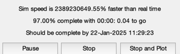

Orbit simulation of a solar sail.
------------------------------------------------------------------------
See also Plot2D, TimeGUI, TimeLabl, Mag, Unit, Date2JD, RV2AE,
PlanetPosition
------------------------------------------------------------------------
Contents
clear d;
Globals for the GUI
global simulationAction
simulationAction = ' ';
d.muSun = 1.327124e+11;
Solar sail. The normal is defined in the heliocentric system.
d.sail.normal = [1;0;0];
d.sail.area = 100^2;
d.sail.sigmaT = 0;
d.sail.sigmaA = 1.0;
d.sail.sigmaD = 0.0;
d.sail.sigmaS = 0.0;
d.mass = 1000;
d.planetsOn = 1;
d.jDStart = Date2JD;
The number of steps
nSim = 100;
Initialize the planet function
PlanetPosition('initialize',1:9);
Create the time array
tDuration = 86400*365.25;
t = linspace(0,tDuration);
dT = t(2) - t(1);
Specify the ode113 accuracy
xODEOptions = odeset( 'AbsTol', 1e-4, 'RelTol', 1e-4 );
Set up the position and velocity vectors. Units are km and km/s.
a0 = 149597870;
r = [a0;0;0];
v = [0;sqrt(d.muSun/a0);0];
Assemble the state vector
x = [r;v];
Initialize the time display
dTSim = dT;
tToGoMem.lastJD = 0;
tToGoMem.lastStepsDone = 0;
tToGoMem.kAve = 0;
ratioRealTime = 0;
[ ratioRealTime, tToGoMem ] = TimeGUI( nSim, 0, tToGoMem, 0, dT, 'Heliocentric Mars Transfer' );
xPlot = zeros(8,nSim);
[a,e] = RV2AE( x(1:3), x(4:6), d.muSun );
xPlot(:,1) = [x;a;e];
Simulate
for k = 2:nSim
[ ratioRealTime, tToGoMem ] = TimeGUI( nSim, k, tToGoMem, ratioRealTime, dT );
d.sail.normal = -Unit(x(1:3));
[z, x] = ode113( 'FSolarSail', [t(k-1) t(k)], x, xODEOptions, d );
x = x(end,:)';
[a,e] = RV2AE( x(1:3), x(4:6), d.muSun );
xPlot(:,k) = [x;a;e];
switch simulationAction
case 'pause'
pause
simulationAction = ' ';
case 'stop'
dontPlot = 1;
break;
case 'plot'
break;
end
end

Close the time GUI
close( tToGoMem.hGUI.fig );
j = 1:k;
r = Mag(xPlot(1:3,j));
v = Mag(xPlot(4:6,j));
Visualize the orbit
[t, c] = TimeLabl( t(j) );
Plot2D( t, [r;v;xPlot(7:8,j)], c, ['|r|';'|v|';' a ';' e '], 'Heliocentric Trajectory' );
dV = xPlot(7,k);
tDuration = t(end);